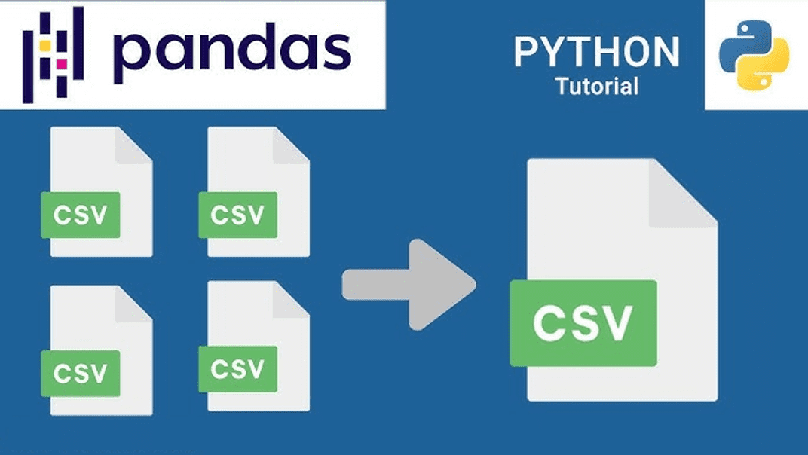

![]()
pip install pandas dask

Introduction
Data consolidation is a crucial step in data preprocessing, particularly when you are working with multiple data sources or large datasets. This tutorial will walk you through the process of merging multiple CSV files into a single dataframe using Python. We will explore two methods: one using Pandas and another using Dask, which is designed to handle larger datasets that may not fit into your computer’s memory.
Pre-requisites
Before proceeding, make sure you have the following libraries installed:
Additionally, you can follow along by downloading the sample dataset here.
Methods
Method 1: Using Pandas
Step 1: Load all CSV files
To begin, we will use the glob module to list all files matching a specific pattern. This pattern will allow us to target multiple CSV files at once:
from glob import glob
import pandas as pd
# List all files matching the pattern
files = sorted(glob('data/Sales_Data_*.csv'))
files['data\\Sales_Data_01.csv',
'data\\Sales_Data_02.csv',
'data\\Sales_Data_03.csv',
'data\\Sales_Data_04.csv',
'data\\Sales_Data_05.csv',
'data\\Sales_Data_06.csv',
'data\\Sales_Data_07.csv',
'data\\Sales_Data_08.csv',
'data\\Sales_Data_09.csv',
'data\\Sales_Data_10.csv',
'data\\Sales_Data_11.csv',
'data\\Sales_Data_12.csv',
'data\\Sales_Data_13.csv',
'data\\Sales_Data_14.csv',
'data\\Sales_Data_15.csv',
'data\\Sales_Data_16.csv',
'data\\Sales_Data_17.csv',
'data\\Sales_Data_18.csv',
'data\\Sales_Data_19.csv',
'data\\Sales_Data_20.csv']Here, glob() finds all files with names matching the pattern Sales_Data_*.csv and sorts them for easier handling.
Step 2: Load and merge CSV files into a single dataframe
Once we have the list of files, the next step is to read and concatenate them using Pandas:
# Concatenate all CSV files into a single dataframe
sales_pandas = pd.concat([pd.read_csv(f) for f in files], ignore_index = True)This command reads each file in the list, creates a Pandas dataframe, and merges them into a single dataframe.
Step 3: Verify the consolidated data
Finally, inspect the data to ensure it was properly loaded:
sales_pandas.head() # Display the first few rows of the dataframe| Region | Product | Date | Sales | |
|---|---|---|---|---|
| 0 | West | Prod T | 9/6/2012 | 53395.17732 |
| 1 | West | Prod K | 2/23/2016 | 116609.69480 |
| 2 | South | Prod F | 9/20/2013 | 72524.09530 |
| 3 | South | Prod J | 12/24/2010 | 22538.47873 |
| 4 | North | Prod D | 3/28/2012 | 45616.53282 |
sales_pandas.tail() # Display the last few rows of the dataframe| Region | Product | Date | Sales | |
|---|---|---|---|---|
| 1001 | West | Prod L | 10/19/2010 | 19017.514750 |
| 1002 | North | Prod H | 6/17/2010 | 13202.371870 |
| 1003 | South | Prod K | 7/23/2015 | 106101.309600 |
| 1004 | South | Prod C | 3/31/2010 | 9553.824099 |
| 1005 | South | Prod I | 2/4/2014 | 79516.456490 |
This step helps to confirm that the data has been successfully consolidated.
Method 2: Using Dask
If you are working with datasets that are too large to fit in memory, Dask is a great alternative to Pandas. Dask allows you to work with larger-than-memory datasets by breaking them into manageable chunks and processing them in parallel.
Step 1: Install and import Dask
First, ensure Dask is installed:
pip install daskThen, import Dask alongside Pandas:
import dask.dataframe as ddStep 2: Read and load files into a Dask dataframe
Like Pandas, Dask can also load multiple CSV files. The difference is that Dask operates lazily, meaning it doesn’t load the data until it is necessary.
# Read CSV files with Dask
sales_dask = dd.read_csv('data/Sales_Data_*.csv')This command will load all CSV files matching the pattern into a Dask dataframe.
Step 3: Convert the Dask dataframe into a Pandas dataframe (if needed)
Once you’ve processed the data with Dask, you can compute the result and convert it to a Pandas dataframe, if needed:
sales_pandas = sales_dask.compute()This will trigger the computation and load the data into memory as a Pandas dataframe. Be cautious with this step, as the dataset needs to fit into memory for Pandas to handle it.
Step 4: Analyze and verify the data
As with Pandas, you can inspect the Dask dataframe or the resulting Pandas dataframe:
sales_pandas.head()| Region | Product | Date | Sales | |
|---|---|---|---|---|
| 0 | West | Prod T | 9/6/2012 | 53395.17732 |
| 1 | West | Prod K | 2/23/2016 | 116609.69480 |
| 2 | South | Prod F | 9/20/2013 | 72524.09530 |
| 3 | South | Prod J | 12/24/2010 | 22538.47873 |
| 4 | North | Prod D | 3/28/2012 | 45616.53282 |
sales_pandas.info(memory_usage = 'deep')<class 'pandas.core.frame.DataFrame'>
Index: 1006 entries, 0 to 45
Data columns (total 4 columns):
# Column Non-Null Count Dtype
--- ------ -------------- -----
0 Region 1006 non-null object
1 Product 1006 non-null object
2 Date 1006 non-null object
3 Sales 1006 non-null float64
dtypes: float64(1), object(3)
memory usage: 179.5 KBThis gives you a detailed look at the memory usage of your dataset, which is particularly helpful for large datasets.
Conclusion
When consolidating data from multiple CSV files, Pandas is a fantastic option for small- to medium-sized datasets. However, when handling larger datasets that exceed your computer’s memory, Dask provides an efficient alternative by allowing parallel processing.
Understanding when to use Pandas or Dask depends largely on the size of the data you’re working with and your available system resources. Start with Pandas for small datasets, and switch to Dask as your data grows in complexity.